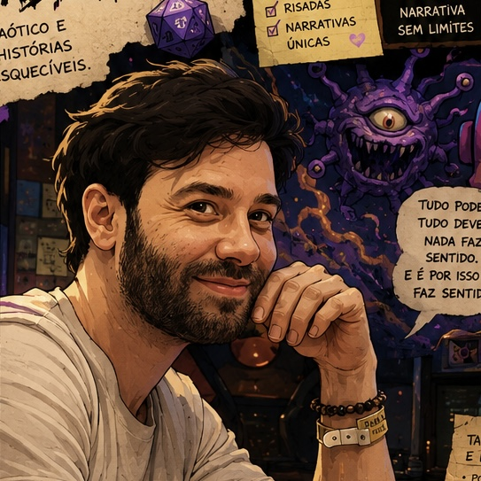

Hobby: bots e ferramentas para comunidades
Eu crio as ferramentas que ajudam comunidades a funcionar.
Nas horas livres, idealizo e dou vida a bots de Discord, jogos no navegador e sistemas internos para RPG, NinOnline e Minecraft, do conceito até o uso real em produção.

